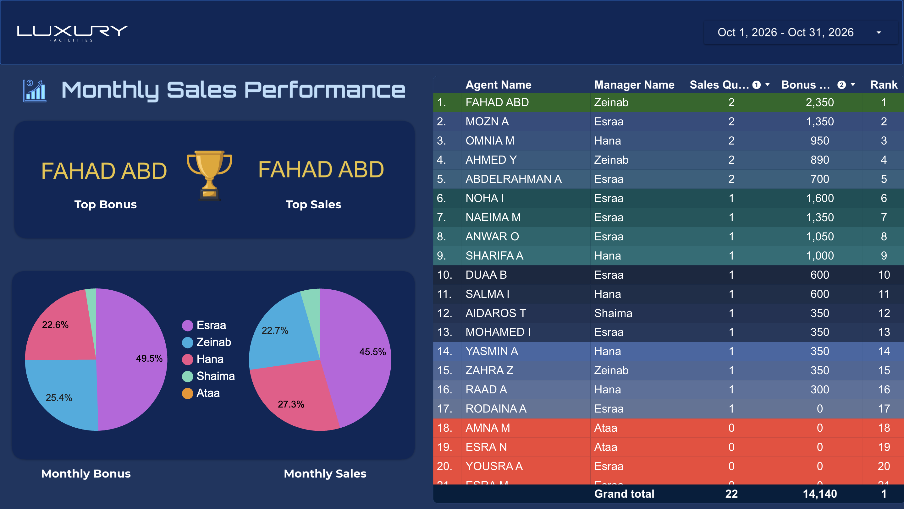
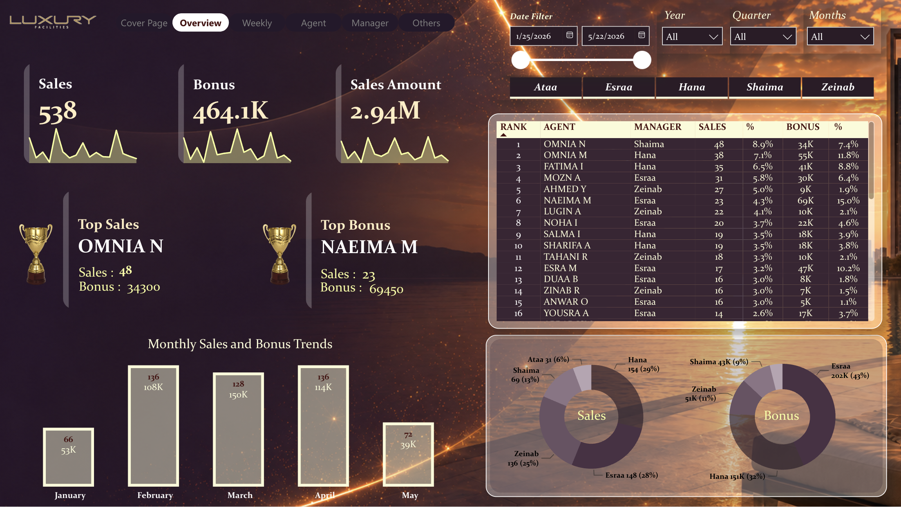
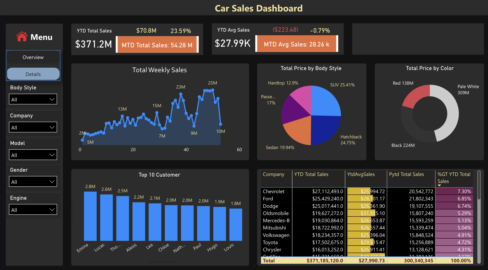
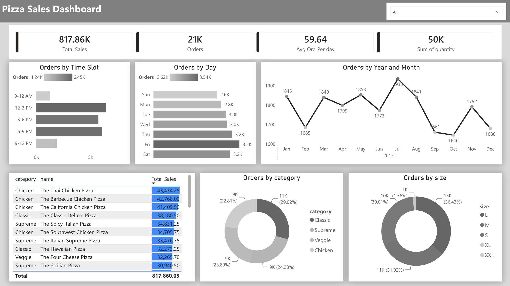
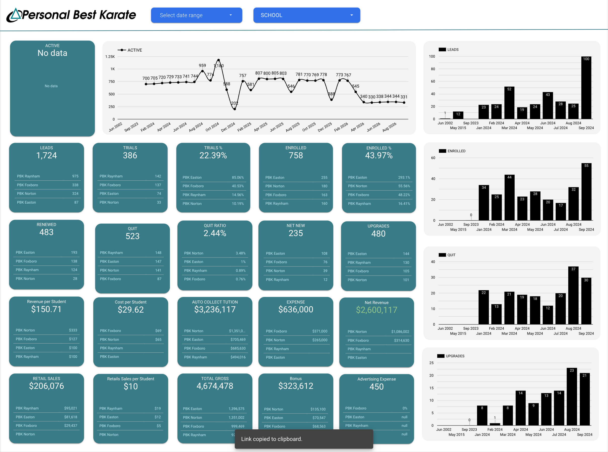
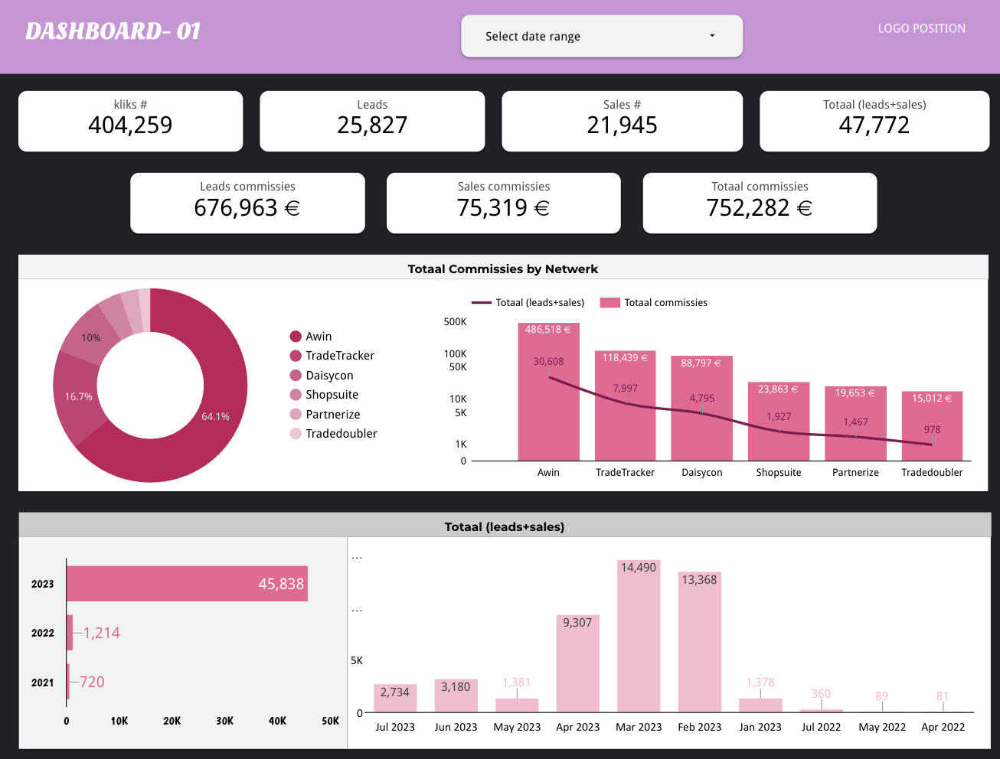
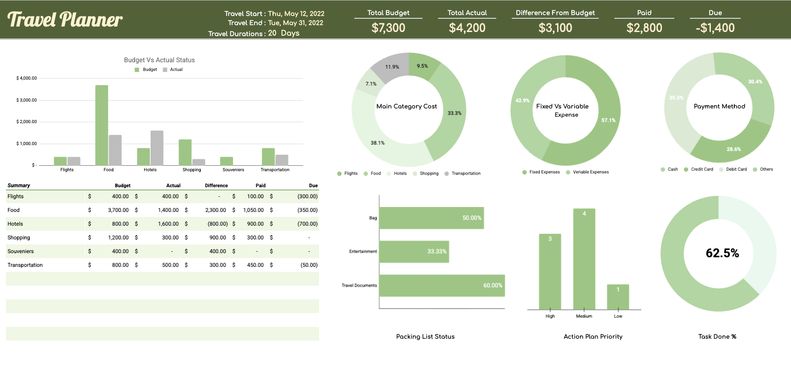
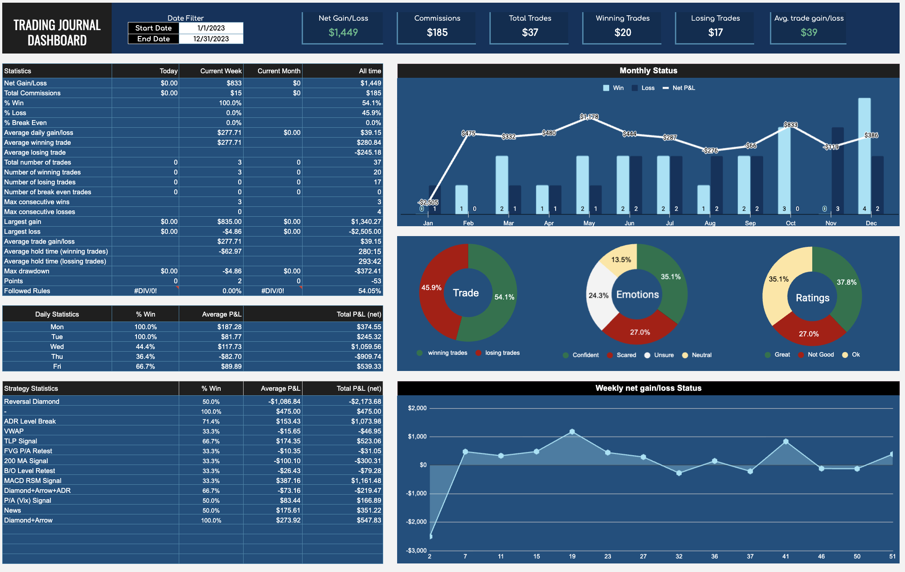
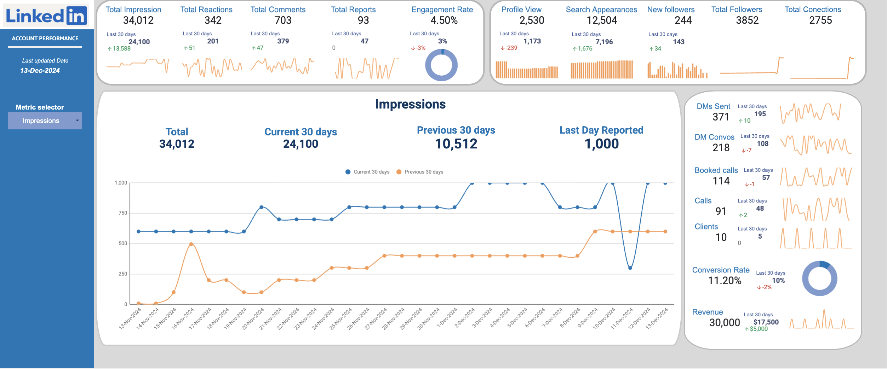
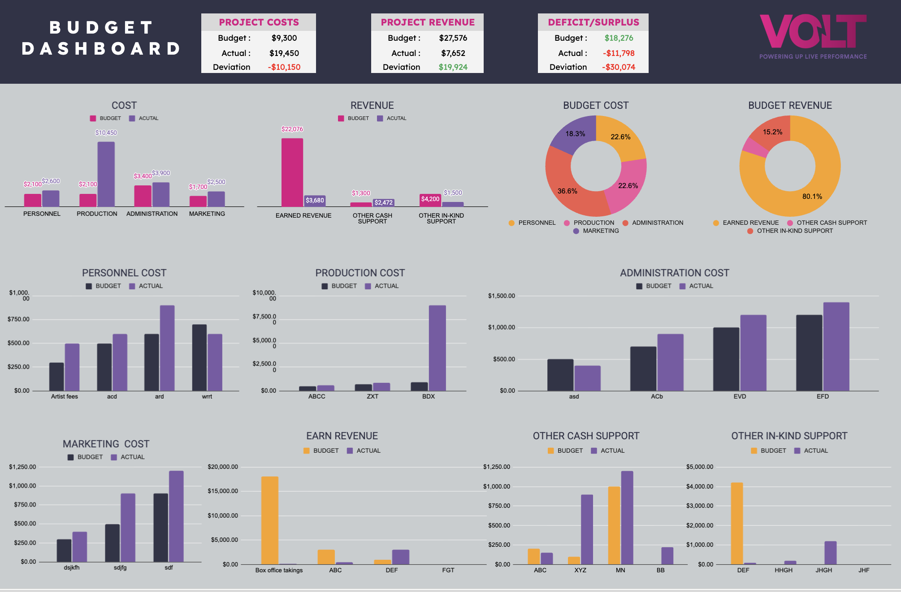

Hello, I’m
Shamsuzzaman
Limon.
I turn complex business data into clear, actionable insights. With 6+ years across analytics, dashboard development, and process automation, I help teams make smarter decisions and work more efficiently.
Trusted by clients around the world to make their data useful.
EXPERIENCE
COMPLETED
CLIENTS
RATING
Skills & Tools
The core stack I use to move from raw data to a decision-ready report.
Evidence of
curiosity.
A selection of client solutions across finance, sales, operations, and performance reporting—built around real workflows and practical decisions.

Monthly Sales Leaderboard
A live monthly performance dashboard highlighting sales and bonus leaders, with an agent leaderboard and date-range filtering for quick team review.
View live dashboard ↗
Sales & Bonus Performance Dashboard
A multi-page Power BI report for overview, weekly, agent, manager, and other performance views, with date filtering, sales and bonus KPIs, rankings, and monthly trends.
View Power BI report ↗
Car Sales Dashboard
An interactive vehicle sales report with year-to-date and month-to-date KPIs, weekly trends, top customers, and comparisons by body style, color, and company.
View Power BI report ↗
Pizza Sales Dashboard
A sales analysis report tracking 21K orders and $817.86K in sales, with views by time slot, weekday, month, pizza category, size, and product.
View Power BI report ↗
Personal Best Karate · All-Schools KPI Dashboard
A multi-school performance dashboard tracking leads, trials, enrollments, renewals, upgrades, revenue, and expenses, with date-range and school filters.
View live dashboard ↗
Network Leads & Sales Commissions
A multi-network performance report tracking clicks, leads, sales, and commissions, with network comparisons and historical trends.
View live dashboard ↗
Travel Planner Dashboard
A trip-planning dashboard comparing budget and actual spending, with category and payment breakdowns, packing-list status, action priorities, and task completion tracking.
Open Google Sheet ↗
Trading Journal Dashboard
A performance tracker with net gain and loss, commissions, win rates, daily and monthly statistics, strategy analysis, trade ratings, and weekly trends.
Open Google Sheet ↗
LinkedIn Account Performance Dashboard
A social and business performance tracker for impressions, reactions, comments, engagement, follower growth, profile activity, messages, booked calls, clients, and revenue.
Open Google Sheet ↗
Project Budget Dashboard
A budget-versus-actual overview for project costs and revenue, with surplus or deficit tracking and category-level breakdowns for personnel, production, administration, and marketing.
Open Google Sheet ↗Good questions.
Clear answers.
I combine data preparation, analysis, visualization, and process improvement to deliver reporting people can put to work.
Understand the need
Clarify the business question, reporting goals, and the people who will use the result.
Prepare & automate
Clean, transform, validate, and automate data flows for consistent reporting.
Analyze performance
Build KPIs, track trends, and surface the patterns that matter.
Deliver clear insights
Present results through dashboards and reports designed for real decisions.
WITH
CONTEXT✳
Data-minded.
Business-focused.
I’m a data analyst and business intelligence professional with more than six years of experience building dashboards, reporting systems, and process automation for global clients. My toolkit includes Excel, Google Sheets, Looker Studio, Power BI, SQL, Python, Power Query, and Google Apps Script.
Alongside freelance analytics work, I bring hands-on production planning experience in the apparel industry. That background helps me connect reporting to day-to-day operations, team coordination, and on-time delivery.
Experience &
education.
Analytics, freelancing, and production planning have given me a practical view of how teams use data to run their work.
Data Analyst
Luxury Facilities Cards LLC · Remote
Develop dashboards and automated reports, analyze business data, create KPI reporting, and improve reporting efficiency, data accuracy, and performance visibility.
Freelance Data Analyst · Reports & Dashboard Developer
Fiverr · Upwork · LinkedIn
Delivered 450+ projects for global clients, building dashboards and reporting systems in Power BI, Excel, Google Sheets, and Looker Studio, with workflow automation using Power Query and Apps Script.
Manager · Production Planning & Coordination
Manami Fashions Ltd.
Coordinate production planning and order execution for international apparel buyers, monitor KPIs, and use spreadsheet dashboards to improve reporting and support decisions.
Built on craft.
Driven by insight.
Let’s make sense
of what’s next.
Need a dashboard, automated report, or a clearer view of your business data? Let’s talk about the outcome you’re looking for.
CONNECT↗